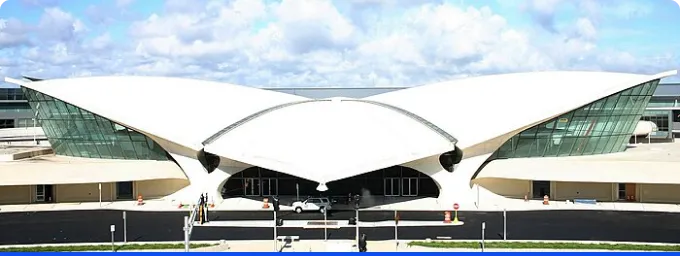
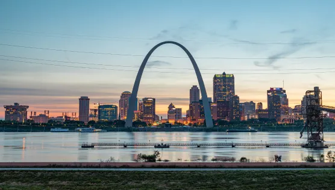

Qui est Eero Saarinen ?
Eero Saarinen (1910-1961) est une figure légendaire de l'architecture moderne, reconnu pour ses créations emblématiques qui ont redéfini les normes architecturales du XXe siècle.

Héritage Architectural
Élevé dans une famille d'architectes, Saarinen a été immergé dès son plus jeune âge dans un environnement imprégné de créativité et de modernisme. Il a hérité d'une riche tradition architecturale de son père, Eliel Saarinen, lui-même architecte renommé.
Visionnaire et Innovateur
Saarinen a su repousser les limites de l'architecture en combinant formes organiques, éléments structurels novateurs et une vision avant-gardiste. Ses œuvres iconiques, telles que le terminal TWA à l'aéroport JFK de New York, témoignent de son génie créatif et de son engagement envers l'innovation.
Exploration des Frontières
Son désir inlassable d'explorer de nouvelles formes et technologies a constamment élargi les horizons de l'architecture moderne. Sa capacité à intégrer des concepts visionnaires tout en maintenant un équilibre subtil entre fonctionnalité et esthétique reste un trait distinctif de son héritage.
Influence Durable
L'impact de Saarinen sur l'architecture moderne perdure et continue d'inspirer architectes et passionnés du monde entier. Son héritage artistique transcende les époques, témoignant d'une créativité intemporelle qui continue d'influencer les générations futures.